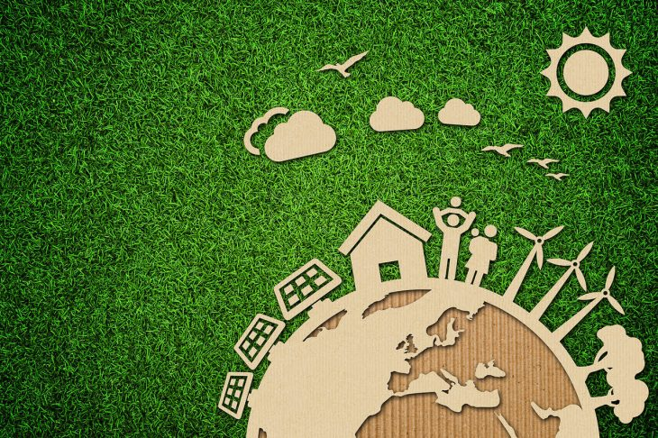

Desarrollo Sustentable
El Desarrollo Sustentable obedece a la idea basica de satisfacer las necesidades de la sociedad actual sin comprometer la estabilidad del futuro, es decir, mantener un equilibro “Sustentable” entre las personas a fin de desarrollar estrategias en pro del bienestar del mundo. La palabra sostenible a sido cuestionada en virtud a que es diferentes países su significado varia en torno a lo que se mantiene estable. Se habla de sostenible cuando los recursos utilizados para mantener una estructura no se acabaran nunca, por lo que es seguro invertir, vivir, crear, desarrollar, explorar y mas en ese campo.

El desarrollo Sustentable implica una importante relación entre diferentes áreas de una comunidad en las que se relacionan los aspectos culturales, económicos, sociales y ambientales, todo esto, enmarcado en un marco democrático y participativo, donde la política juega n papel demostrativo, dándole la oportunidad a la gente para confiar en ella. El desarrollo sustentable se basa en el crecimiento de toda la población, son ideas que evolucionan constantemente para que el individuo se sienta seguro con su entorno.
La equidad social refuerza al concepto, con el Desarrollo Sustentable todos ganan, lo que representa una inversión positiva, existen ganancias alrededor de la comunidad que aplique el desarrollo sustentable no solo en el ámbito económico sino también en lo social, brindándole bienestar al ciudadano

Para que un país logre la sustentabilidad tiene que empezar por cambiar su forma de pensar de manera colectiva, su pensamiento y meta debe ser fija, debe pensar en desarrollo, en crecimiento, en imponerse limites de crecimiento productivo para romperlos, que el consumo de los recursos debe ser aprovechado, invertido y renovado constantemente, para mantener siempre la capacidad productiva. Mantener siempre el capital financiero, físico, humano, social y natural siempre a la disposición de los involucrados en las vías al desarrollo.
Desarrollo sustentable y crecimiento poblacional

El crecimiento poblacional en sí no es un problema, pero si se tiene en cuenta el consecuente aumento del consumo por persona y la distribución de los recursos, éste implica una mayor presión en los recursos escasos del planeta. Por lo que es necesario que la expansión de la población mundial se haga en armonía con la capacidad productiva del mundo.
Además, debe haber un desarrollo tecnológico para todos que permita el sostenimiento de una mayor población sin aumentar la presión y el daño en el medio ambiente, y de esta forma asegurar los recursos a generaciones futuras.
Fuentes:
http://conceptodefinicion.de/desarrollo-sustentable/
https://www.desarrollosustentable.co/2013/04/que-es-el-desarrollo-sustentable.html